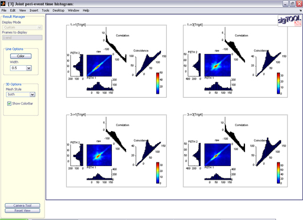
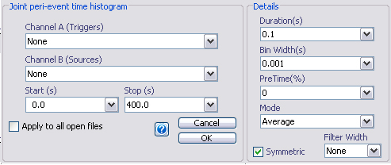
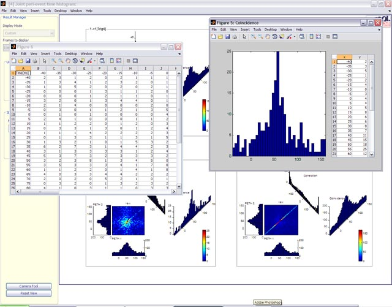
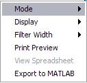

Joint peri-event time histogram (JPETH)
Email: sigtool@kcl.ac.uk

Email: sigtool@kcl.ac.uk
Author: Malcolm Lidierth
Updated: September 2009
The joint peri-event time histogram analysis calculates the coincidence matrix and associated one-way perievent time histograms together with the spike correlation and coincidence histogram (Aertson et al. 1989). These are displayed in a single plot:

For a tutorial on the joint peri-event time histogram by Kyle Kirkland, see http://mulab.physiol.upenn.edu/jpst.html

Select the trigger channel in the Channel A selector (only one channel should be selected).
Select the event (spike) channels using the Channel B selector (multiple channels allowed).
Sets the timebase for the resulting event autocorrelations and the bin width to use (in seconds)
Sets the pre-time as a percentage of the duration.
Sets the mode for returning the conicidence matrix
| MODE | DESCRIPTION |
| 'raw' | returns the spike counts without scaling |
| 'average' | the raw jpeth matrix scaled by the number of triggers will be used |
| 'corrected' | the raw matrix will be scaled by subtracting the cross product of peth1 and peth2 |
| 'errors' | returns the binomial errors i.e. the number of occasions when more than one coincidence occurred in a single bin in a single sweep |
| 'normalized' | the corrected matrix will be scaled by product of the standard deviations of the peths. Normalized values are therefore correlation coefficients with a range of -1 to 1. |
| 'surprise' | returns Palm's "surprise" measure of significance (see Palm et al., 1988). Positive values represent excitation and negative values inhibition. |
[Note that custom modes may also be available if user-defined methods have been added to the jpeth class].
If a filter width is set, a 2-dimensional filter will be applied to the the coincidence matrix. Each value in the matrix will be the average of the surrounding values in the unfiltered matrix. The filter width should be odd. Note that no correction is made for missing values at the edgse of the matrix. You should therefore choose a pre-time that moves the area of interest away from the edges.
By default, the output contains the auto-JPETHs (e.g. spike1 vs spike1) and the cross-JPETHs in both directions e.g.. spike1 vs spike2 as well as spike2 vs spike1. If the Channel B selections are in numerical order, the auto-JPETHs will appear along the diagonal in the display.
Deselecting the "Symmetric" checkbox will suppress the calculation of spikeN vs spikeM where N>M.
Some of the standard context-sensitive menus are disabled for JPETH plots. To view a single JPETH in a new window, double-click on a blank area in its panel. To view individual graphs and their data, double-click on them (for the matrix, only the data will be shown).

Context-sensitive menus for each JPETH panel allow you to change the options. This includes changing the mode, display type for the matrix and filter width. You can also print preview a panel, and export the underlying JPETH object to the base MATLAB workspace.

Aertson AMHJ, Gerstein, G, Habib, MK & Palm, G. (1989) Dynamics of neuronal firing correlation: modulation of "effective connectivity", Journal of Neurophysiology, 61, 900-917.
Palm et al. (1988) On the significance of correlations among neural spike trains Biological Cybernetics 59, 1-11.© The Author and King's College London, 2009-